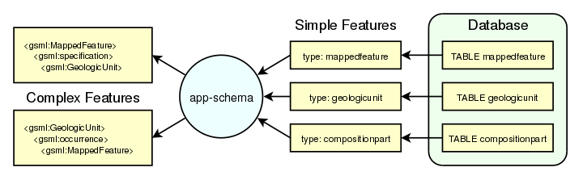

Working with Application Schemas¶
응용 프로그램 스키마 지원(app-schema) 확장 모듈은 GeoServer WFS의 Complex Features를 지원합니다.
주석
응용 프로그램 스키마 지원을 이용하려면 app-schema 플러그인을 설치해야 합니다.
GeoServer는 PostGIS나 Oracle Spatial과 같은 JDBC 데이터 저장소를 포함하는 단순(simple) 피처 데이터 저장소와 속성 파일, shapefile을 폭넓게 지원하고 있습니다. app-schema 모듈은 이런 단순 피처 데이터 저장소 하나 혹은 그 이상을 가지고, 단순 피처형을 GML 응용 프로그램 스키마를 만족하는 복잡 피처형 하나 혹은 그 이상으로 변환하는 매핑 작업을 합니다.

GeoServer의 단순 피처 지원 기능을 이용해 데이터베이스의 테이블 3개에 접근하여 복잡 피처형 2개로 변환
GeoServer는 app-schema 모듈을 다른 데이터 저장소와 똑같이 인식하기 때문에 로드해서 WFS 요청을 서비스하는 데 사용할 수 있습니다. 즉 app-schema 저장소는 단순 피처 데이터 저장소를 복잡 피처로 변환해 WFS를 통해 전송하는 래퍼(wrapper) 또는 어댑터(adapter)입니다. 이 매핑 작업은 양방향으로 가능합니다. 따라서 복잡 피처의 속성에 대한 쿼리도 지원합니다.
- Complex Features
- Installation
- WFS Service Settings
- Configuration
- Mapping File
- Application Schema Resolution
- Supported GML Versions
- Secondary Namespaces
- CQL functions
- Property Interpolation
- Data Stores
- Feature Chaining
- Polymorphism
- Data Access Integration
- WMS Support
- WFS 2.0 Support
- Joining Support For Performance
- Tutorial